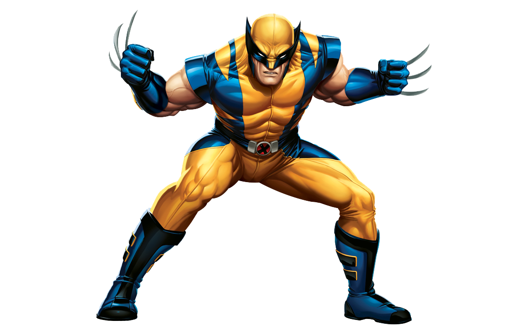

Wolverine
A mutant who possesses razor-sharp senses, enhanced physical capabilities, a powerful regenerative ability known as the healing factor, and three retractable bone claws in each hand.
Contribuído por - Lucas Numeriano